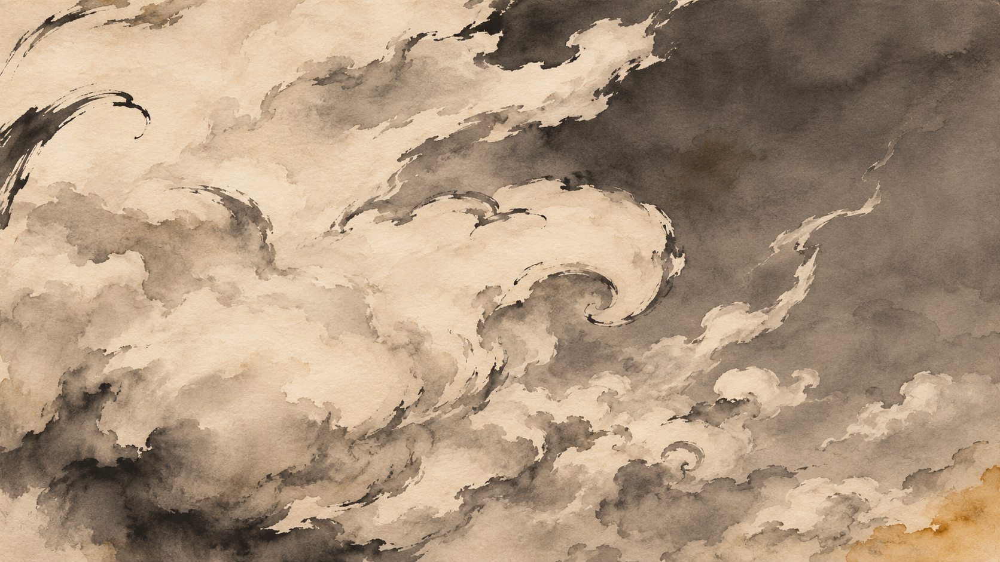
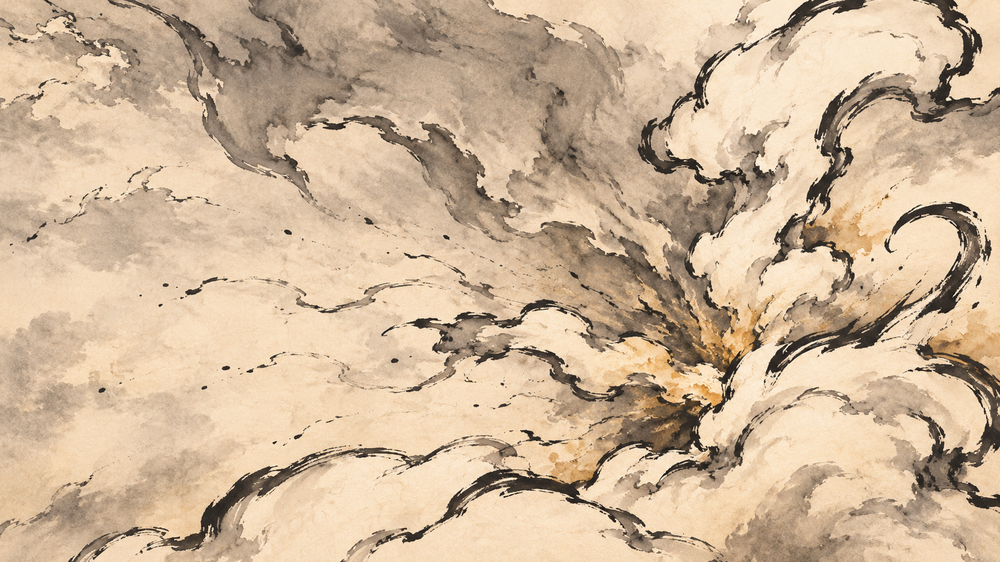
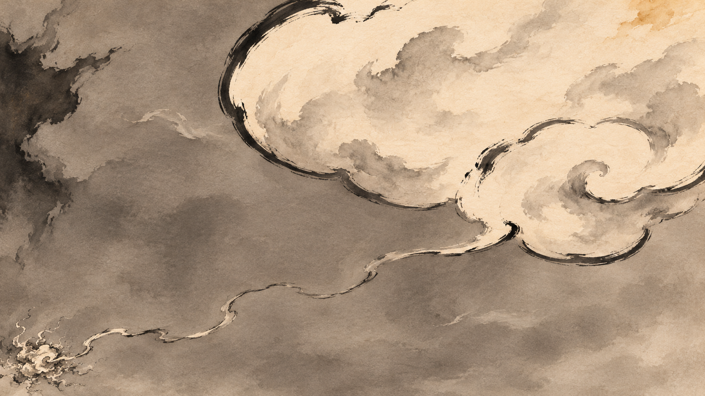
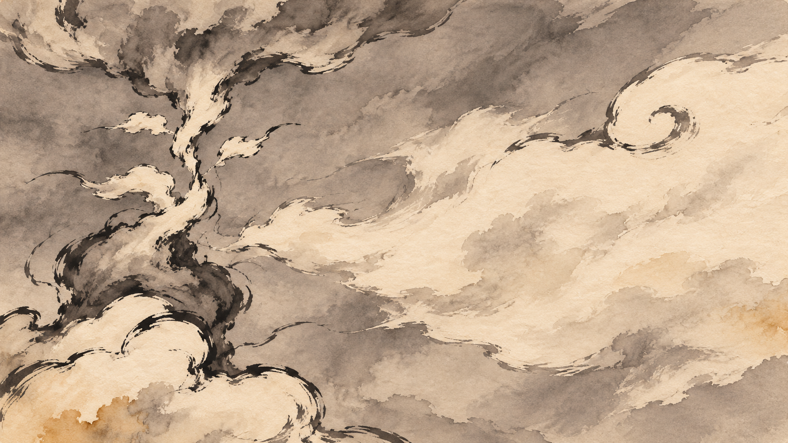
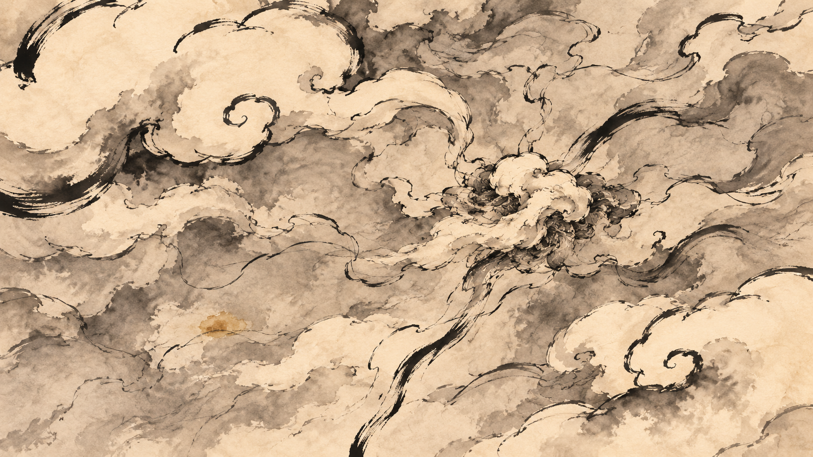
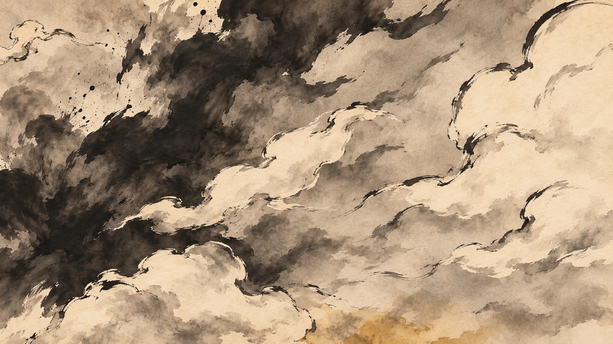

I — Off-center rupture
One oversized cloud breaks into scattered fragments, leaving an uneven field of ink haze.

J — Colliding fronts
Unequal cloud banks collide off center, throwing thin tendrils across a quieter field.

K — Giant and swarm
A huge cropped cloud contrasts with a tiny, intricate knot of vapor.

L — Torn cloud column
A kinked vertical plume changes width abruptly beside a broad pale cloud sheet.

M — Tangled crosswinds
Wandering brush lines, broken curls and cloud fragments pull in competing directions.

N — Ink eruption
A dark, ragged ink mass cuts through scattered ivory clouds and gray vapor.